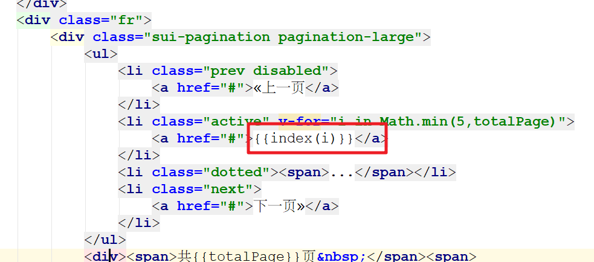
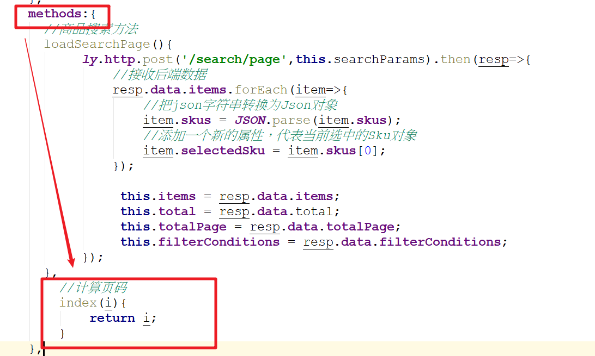
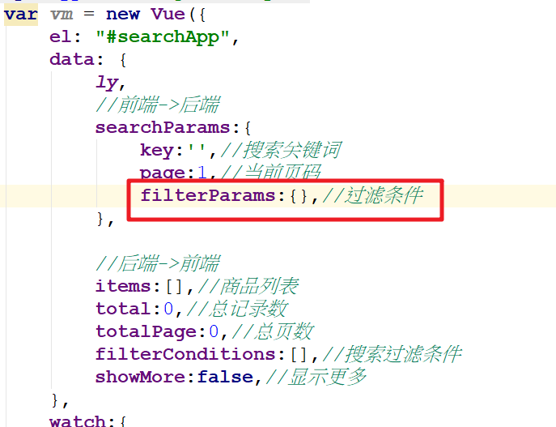
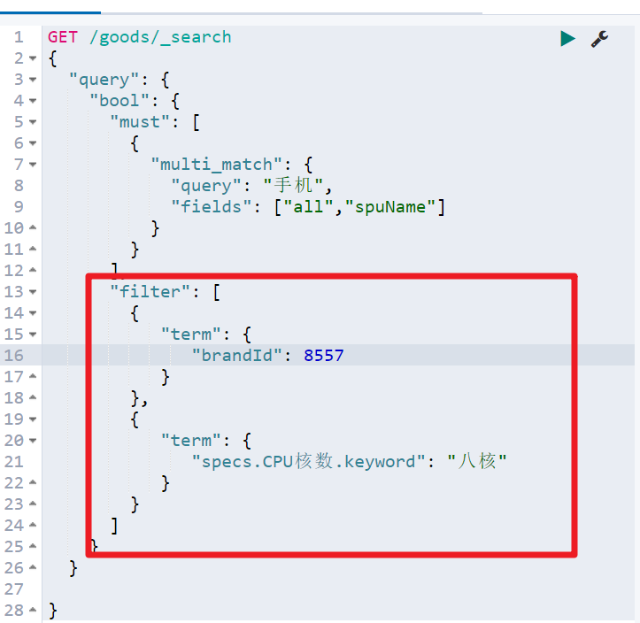

01、课程目标
- 实现商品搜索的过滤条件
- 了解Thymeleaf的基本使用
- 搭建商品详情微服务

02、搜索页渲染：商品分页 - 计算分页条(了解)
首先，应该接收后端返回的总记录数 和 总页数：

然后看下我们要实现的效果：

这里最复杂的是中间的1~5的分页按钮，它需要动态变化。
按以下步骤一步步实现
1）一共显示多少个方块页码？
如果总页数小于5，就展示‘’总页数‘’个方块；如果总页数大于5，就展示5个方块。
<li class="active" v-for="i in Math.min(5,totalPage)">
<a href="#">{{i}}</a>
</li>2）方块里面页码数字显示什么？
- 分析一下就知道方块里面的页码是变化的，所以这里可以定义index方法来计算方块显示的数字，index方法传入i，返回一个数字。该数字就是方块展示的数字。

- 紧接着，需要定义一个index方法来计算页码

index方法的实现逻辑
如果 当前页是前三页（当前页<=3 ）或 总页数 <=5 ，方块展示的数字就应该是1 到 5，或1到总页数。
如果 当前页是后三页，且总页数大于5，方块应该展示的数字是 总页数-5+i
如果 当前页是前三页和后三页之间，且总页数大于5，此时，方块应该展示的的数字是当前页-3+i。
//计算方块里面数字
index(i){
if(this.searchParams.page<=3 || this.totalPage<=5){
//当前页为前三页的情况或总页数<=5的情况，返回 i
return i;
}else if(this.searchParams.page>=this.totalPage-2){
//当前页为后三页的情况，返回 总页数-5+i
return this.totalPage-5+i;
}else{
//当前页为前三页和后三页中间的情况，返回当前页-3+i
return this.searchParams.page-3+i;
}
}3）显示其他数据
<div class="fr">
<div class="sui-pagination pagination-large">
<ul>
<li :class="{prev:true,disabled:searchParams.page==1}">
<a href="#">«上一页</a>
</li>
<li :class="{active:searchParams.page==index(i)}" v-for="i in Math.min(5,totalPage)">
<a href="#">{{index(i)}}</a>
</li>
<li class="dotted"><span>...</span></li>
<li :class="{next:true,disabled:searchParams.page==totalPage}">
<a href="#">下一页»</a>
</li>
</ul>
<div><span>共{{totalPage}}页 </span><span>
到第
<input type="text" class="page-num">
页 <button class="page-confirm" onclick="alert(1)">确定</button></span></div>
</div>
</div>03、搜索页渲染：商品分页 - 点击事件实现换页
1）添加点击事件
点击分页按钮后，自然是要修改page的值
所以，我们在上一页、下一页、每页页码按钮添加点击事件，对page进行修改，在数字按钮上绑定点击事件，点击直接修改page：

翻页事件的方法
//上一页
prevPage(){
if(this.searchParams.page>1){
this.searchParams.page--;
}
},
//下一页
nextPage(){
if(this.searchParams.page<this.totalPage){
this.searchParams.page++;
}
},
//跳转到指定页
toPage(curPage){
this.searchParams.page=curPage;
}2）监听page页码的变化
监听当page发生变化，我们应该去后台重新查询数据。
watch:{
//监听当前页的变化
"searchParams.page":{
handler(){
//只改变商品分页列表内容（不要改变规格参数）
this.pageChange();
}
}
},提供pageChange方法
//商品分页变化
pageChange(){
ly.http.post('/search/page/change',this.searchParams).then(resp=>{
//接收数据
resp.data.forEach(item=>{
//1.把每个item的skus属性转换为Js对象
item.skus = JSON.parse(item.skus);
//2.在每个item里面添加selectedSku属性存入当前选中的Sku（默认第一个选中）
item.selectedSku = item.skus[0];
});
this.items = resp.data;
}).catch(e=>{
});
}3）微服务提供换页方法
SearchController类提供换页方法
/**
* 商品换页方法
*/
@PostMapping("/page/change")
public ResponseEntity<List<GoodsDTO>> pageChange( @RequestBody SearchRequest searchRequest ){
List<GoodsDTO> goodsDTOList = searchService.pageChange(searchRequest);
return ResponseEntity.ok(goodsDTOList);
}SearchService类提供换页业务
public List<GoodsDTO> pageChange(SearchRequest searchRequest) {
//1.分页查询商品
PageResult<GoodsDTO> pageResult = itemQueryPage(searchRequest);
return pageResult.getItems();
}04、搜索页渲染：商品分页 - URL变化问题
现象
我们会发现换页的时候，商品列表数据虽然更新了，但是浏览器的URL地址无变化，这样是有问题的，因为当我们把网址复制给别人的时候，不管怎样，别人打开的都是第一页
解决办法
在每次page属性变化的时候，把当前搜索参数全部设置到地址栏的URL中即可
watch:{
//监听当前页的变化
"searchParams.page":{
handler(){
//把搜索参数追加到URL中
//1.获取当前搜索参数
//把搜素参数转换为字符串参数对
let paramsStr = ly.stringify(this.searchParams); // 格式：key=xxx&page=1....
//拼接新的URL地址: http://www.leyou.com/search.html?key=xxx&page=1....
let newURL = location.origin+location.pathname+"?"+paramsStr;
//2.修改URL的内容
//注意：不要使用location.href去修改URL地址，因为它会重定向
window.history.replaceState(null,null,newURL);
//只改变商品分页列表内容（不要改变规格参数）
this.pageChange();
}
}
},这时发现URL地址会改变了

但是URL复制给别人打开重新访问的时候，还是回到第一页！这时因为目前我们在created钩子函数中只添加了key作为条件，没有其他条件。解决办法很简单，把当前URL地址的所有参数设置到searchParams即可
created(){
//设置key关键词
let key = ly.getUrlParam('key');
if(key==''){
alert('请输入关键词');
return;
}
//获取当前URL的参数，赋值给searchParams
//1）获取URL的参数
let paramStr = location.search.substring(1);
//2）把字符串参数对转换为js对象
let paramJson = ly.parse(paramStr);
//处理page默认值问题
paramJson.page = paramJson.page || 1;
//这里没有为key进行判断，如果为空值 可以给默认值（如下）或者直接返回提示没有搜索词
//paramJson.page = paramJson.page || "小米";
//3）把paramJson赋值给searchParams
this.searchParams = paramJson;
this.loadSearchPage();
},05、搜索页渲染：商品分页 - 顶部分页条
在页面商品列表的顶部，也有一个分页条：

我们把这一部分，也加上点击事件：

<div class="top-pagination">
<span>共 <i style="color: #222;">{{total}}+</i> 商品</span>
<span><i style="color: red;">{{searchParams.page}}</i>/{{totalPage}}</span>
<a class="btn-arrow" href="javascript:void(0)" @click="prePage" style="display: inline-block"><</a>
<a class="btn-arrow" href="javascript:void(0)" @click="nextPage" style="display: inline-block">></a>
</div>06、搜索过滤筛选：前端代码
1） 在data中定义变量接收过滤条件参数

2） 修改钩子函数
created(){
//获取URL的参数
/*
let key = ly.getUrlParam('key');
let page = ly.getUrlParam('page');
//给key赋值
this.searchParams.key = key;
this.searchParams.page = page;
*/
//1.获取当前URL后面的所有参数
let paramStr = location.search.substring(1);
//2.把参数转换为js对象
let paramJson = ly.parse(paramStr);
//添加page默认值
paramJson.page = paramJson.page || 1;
//添加filterParams默认值
paramJson.filterParams = paramJson.filterParams || {};
//3.把js对象赋值给searchParams
this.searchParams = paramJson;
//发出请求
this.loadSearchPage();
},3） 给所有过滤条件的值绑定点击事件

4） 定义点击触发事件
定义点击触发事件，修改查询过滤条件数据
//把点击的搜索筛选条件加入变量中
clickFilterParamHandler(key,value){
//单独处理分类和名牌，取出id
if(key=='分类' || key=='品牌'){
value = value.id;
}
//存入filterParams对象
this.searchParams.filterParams[key] = value;
//把点击的所有参数更新URL后面
this.replaceURL();
//请求后台传递参数
this.loadSearchPage();
},5） 抽取出一个通用改变URL地址函数
replaceURL(){
//当前页码变化的时候，把变化的参数追加到当前URL的后面
//1.取出searchParams对象，转换为普通参数格式：key=xxxx&page=1
let paramStr = ly.stringify(this.searchParams);
//2.把所有参数拼接在URL后面
let newURL = location.origin+location.pathname+"?"+paramStr;
//3.把拼接好最终的URL修改到浏览器上面
//注意：location.href不能使用，因为会重新刷新页面。使用window.history.replaceState只会修改URL地址，而不会刷新页面
window.history.replaceState(null,null,newURL);
}6） 测试效果

07、搜索过滤筛选：后端代码(*)
1）原生查询语句(了解)
# 需求： 根据搜索关键词"手机"分页查询商品
GET /goods/_search
{
"query": {
"bool": {
"must": [
{
"multi_match": {
"query": "手机",
"fields": ["all","spuName"]
}
}
],
"filter": [
{
"term": {
"brandId": 8557
}
},
{
"term": {
"specs.CPU核数.keyword": "八核"
}
}
]
}
}
}2） 修改接收参数的对象
package com.leyou.search.dto;
import java.util.Map;
/**
* 用于接收搜索页面传递的参数
*/
public class SearchRequest {
private String key;// 搜索条件
private Integer page;// 当前页
private Map<String,Object> filterParams;//接收页面的规格参数
public Map<String, Object> getFilterParams() {
return filterParams;
}
public void setFilterParams(Map<String, Object> filterParams) {
this.filterParams = filterParams;
}
private static final Integer DEFAULT_SIZE = 20;// 每页大小，不从页面接收，而是固定大小
private static final Integer DEFAULT_PAGE = 1;// 默认页
public String getKey() {
return key;
}
public void setKey(String key) {
this.key = key;
}
public Integer getPage() {
if(page == null){
return DEFAULT_PAGE;
}
// 获取页码时做一些校验，不能小于1
return Math.max(DEFAULT_PAGE, page);
}
public void setPage(Integer page) {
this.page = page;
}
public Integer getSize() {
return DEFAULT_SIZE;
}
}3） 添加查询过滤的业务方法
在之前抽取出来createNativeQueryBuilder公共方法中，再添加一个addFilterParams方法，来调用添加过滤条件的逻辑：
/**
* 创建公共的基本查询条件
* @param searchRequest
* @return
*/
public NativeSearchQueryBuilder createNativeQueryBuilder(SearchRequest searchRequest) {
//1.创建本地查询构造器
NativeSearchQueryBuilder queryBuilder = new NativeSearchQueryBuilder();
//2.往本地查询构造器添加条件
//2.1 添加Query条件
BoolQueryBuilder boolQueryBuilder = QueryBuilders.boolQuery();
//高亮显示步骤一：1）需要高亮的字段必须作为搜索的条件
boolQueryBuilder.must(QueryBuilders.multiMatchQuery(searchRequest.getKey(),"all","spuName"));
//=========追加搜索过滤条件的逻辑=====================
//1.取出页面传递的所有参数
Map<String, Object> filterParams = searchRequest.getFilterParams();
//2.作为filter条件逐一添加bool组合中
if(filterParams!=null){
filterParams.entrySet().forEach(entry->{
String key = entry.getKey();
Object value = entry.getValue();
//3.处理key的内容
if(key.equals("分类")){
key = "categoryId";
}else if(key.equals("品牌")){
key = "brandId";
}else{
key = "specs."+key+".keyword";
}
//4.往bool组合添加filter条件
boolQueryBuilder.filter(QueryBuilders.termQuery(key,value));
});
}
queryBuilder.withQuery(boolQueryBuilder);
//2.2 添加Source过滤
queryBuilder.withSourceFilter(new FetchSourceFilter(new String[]{"id","spuName","subTitle","skus"},null));
return queryBuilder;
}08、搜索过滤筛选：页面过滤项超过一个才显示
现在页面基本完成，但是过滤项如果只剩下一个的时候，还可以点击，我们模仿京东，如果过滤项中只剩下一个，我们就不显示他了，这里用到vue的计算属性：
//计算属性
computed:{
//存放超过1个项目的过滤条件
remainFilterConditions(){
let remain = {};
for(let key in this.filterConditions){
//判断项目长度超过1
if(this.filterConditions[key].length>1){
remain[key] = this.filterConditions[key];
}
}
return remain;
}
},加入了计算属性之后，遍历过滤条件的代码，也要修改：

然后测试，ok了！
09、商品详情：实现方案分析
当用户搜索到商品，肯定会点击查看，就会进入商品详情页，接下来我们完成商品详情页的展示，商品详情页在leyou-portal中对应的页面是：item.html
但是不同的商品，到达item.html需要展示的内容不同，该怎么做呢？
- 思路1：统一跳转到item.html页面，然后异步加载商品数据，渲染页面
- 思路2：将请求交给tomcat处理，在服务端完成数据渲染，给不同商品生成不同页面后，返回给用户
我们该选哪一种思路？
思路1：
- 优点：页面加载快，异步处理，用户体验好
- 缺点：会向服务端发起多次数据请求，增加服务端压力
思路2：
- 优点：服务端处理页面后返回，用户拿到是最终页面，不会再次向服务端发起数据请求。
- 缺点：在服务端处理页面，服务端压力过大，tomcat并发能力差
对于大型电商网站而言，必须要考虑的就是服务的高并发问题，因此要尽可能减少服务端压力，提高服务响应速度，所以这里我们两个方案都不会用，我们采用方案3：
方案3：页面静态化
页面静态化：顾名思义，就是把本来需要动态渲染的页面提前渲染完成，生成静态的HTML，当用户访问时直接读取静态HTML，提高响应速度，减轻服务端压力。
但是页面静态化要和纯静态页面 区分：
纯静态页面：和服务器完全没有任何交互的页面，所有数据都是写死在页面上。
页面静态化：是将纯静态页面，先渲染为动态页面，也就是说数据要从服务器获取。然后再使用静态化模板技术，将动态页面静态化，这时，之前动态页面从服务器获取的数据，也会被一并保存到静态化页面上。当再次访问页面的时候，无需经过服务器。但这时要考虑数据同步问题。
以前服务端渲染我们都使用的JSP，不过在SpringBoot中已经不推荐使用Jsp了，因此我们会使用另外的模板引擎技术：Thymeleaf。
与其类似的模板渲染技术有：Freemarker、Velocity等都可以。
商品详情页页面静态化的设计方案：

经过分析，我们接下来按照以下步骤逐一实现：
- 完成商品详情页面的跳转
- Nginx反向代理添加资源判断
- 搭建商品详情微服务
- 在商品详情微服务中使用Thymeleaf完成页面渲染(当前jsp使用)
- 编写测试类利用Thymeleaf生成静态页面，并存储到Nginx服务器
10、商品详情：了解Thymeleaf语法【了解】
在商品详情页中，我们会使用到Thymeleaf来渲染页面，如果需要先了解Thymeleaf的语法。详见课前资料中thymeleaf语法入门

11、商品详情：完成商品详情页面的跳转
Thymeleaf我们已经入门完了，接下来，我就来开始做商品详情页了。
search.html页面修改路径修改如下：

测试：

12、商品详情：Nginx反向代理添加资源判断
server {
listen 80;
server_name www.leyou.com;
location /item {
# 先找本地
root html;
if (!-f $request_filename) { #请求的文件不存在，就反向代理
proxy_pass http://127.0.0.1:8084;
break;
}
}
location / {
proxy_pass http://leyou-portal;
proxy_connect_timeout 600;
proxy_read_timeout 5000;
}
}把以上配置加入到nginx的对应配置中，意思是如果访问路径为item的资源，会先在nginx的html目录下的item目录下查询是否存在该为静态资源文件，如果找不到则交给Tomcat服务器作为动态资源处理
Nginx反向代理路径说明
location /item斜杠其实就是分隔符号，会匹配/后面的内容。并且根据proxy_pass中是否存在斜杠proxy_pass 有斜杠就会把匹配的内容去除 location中有的。 如果没有斜杠就把匹配的内容带过来。
在这个案例中
http://www.leyou.com/item 代理到 {nginx目录}/html/item
即完整路径为
http://www.leyou.com/item/111.html 代理到 {nginx目录}/html/item/111.html
13、商品详情： 搭建静态页面微服务
1） 创建静态页面微服务

2） 导入jar包
<?xml version="1.0" encoding="UTF-8"?>
<project xmlns="http://maven.apache.org/POM/4.0.0"
xmlns:xsi="http://www.w3.org/2001/XMLSchema-instance"
xsi:schemaLocation="http://maven.apache.org/POM/4.0.0 http://maven.apache.org/xsd/maven-4.0.0.xsd">
<parent>
<artifactId>leyou</artifactId>
<groupId>com.leyou</groupId>
<version>1.0-SNAPSHOT</version>
</parent>
<modelVersion>4.0.0</modelVersion>
<artifactId>ly-page</artifactId>
<dependencies>
<dependency>
<groupId>com.alibaba.cloud</groupId>
<artifactId>spring-cloud-starter-alibaba-nacos-discovery</artifactId>
<version>2.1.0.RELEASE</version>
</dependency>
<!--springmvc环境-->
<dependency>
<groupId>org.springframework.boot</groupId>
<artifactId>spring-boot-starter-web</artifactId>
</dependency>
<!--feign包-->
<dependency>
<groupId>org.springframework.cloud</groupId>
<artifactId>spring-cloud-starter-openfeign</artifactId>
</dependency>
<!--导入item的feign接口包-->
<dependency>
<groupId>com.leyou</groupId>
<artifactId>ly-client-item</artifactId>
<version>1.0-SNAPSHOT</version>
</dependency>
<!--静态化模板包-->
<dependency>
<groupId>org.springframework.boot</groupId>
<artifactId>spring-boot-starter-thymeleaf</artifactId>
</dependency>
<!--测试-->
<dependency>
<groupId>org.springframework.boot</groupId>
<artifactId>spring-boot-starter-test</artifactId>
</dependency>
<!--通用工具包-->
<dependency>
<groupId>com.leyou</groupId>
<artifactId>ly-common</artifactId>
<version>1.0-SNAPSHOT</version>
</dependency>
</dependencies>
<build>
<plugins>
<plugin>
<groupId>org.springframework.boot</groupId>
<artifactId>spring-boot-maven-plugin</artifactId>
</plugin>
</plugins>
</build>
</project>3） 提供启动类
package com.leyou;
import org.springframework.boot.SpringApplication;
import org.springframework.boot.autoconfigure.SpringBootApplication;
import org.springframework.cloud.client.discovery.EnableDiscoveryClient;
import org.springframework.cloud.openfeign.EnableFeignClients;
@SpringBootApplication
@EnableDiscoveryClient
@EnableFeignClients
public class LyPageApplication {
public static void main(String[] args) {
SpringApplication.run(LyPageApplication.class, args);
}
}4） 提供配置文件
server:
port: 8084
spring:
application:
name: page-service
thymeleaf:
cache: false
cloud:
nacos:
discovery:
server-addr: 127.0.0.1:88485） 创建templates目录并拷贝item.html
把leyou-portal项目的item.html拷贝过来

把html标签修改为Thymeleaf的格式
<html lang="en" xmlns:th="http://www.thymeleaf.org">6） 提供跳转到静态页面的处理器
package com.leyou.page.controller;
import org.springframework.stereotype.Controller;
import org.springframework.web.bind.annotation.GetMapping;
import org.springframework.web.bind.annotation.PathVariable;
/**
* 商品详情
*/
@Controller
public class PageController {
/**
* 详情请求
*/
@GetMapping("/item/{id}.html")
public String showDetail(@PathVariable("id") Long id){
//返回模块页面
return "item";
}
}
7） 访问测试

至此，商品详情页面可以正常访问了，但是上面的数据是死的，接下来要把它们变活了！
14、课程总结
1）商品搜索页显示
1.1 商品分页（后台部分换页方法***）
1.2 搜索过滤筛选（后端：在bool组合中添加filter过滤）
2）商品详情
理解为什么要使用静态化技术实现？ 为了高并发